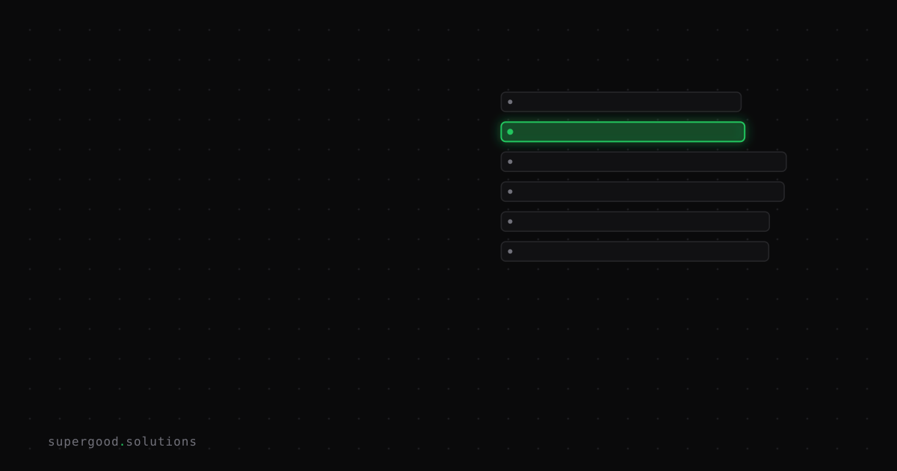

We Scored 49 on Agent Readiness. Here's What Moved It to 88
TL;DR: Agent readiness is how easily AI software, not a person with a browser, can find your site, understand it, and use it. Our own site went from 49 to 88 in three days, and the most useful lesson was about how the score is calculated, not what we built.
Key Insight
On October 29, 2026, supergood.solutions scored 50 out of 100, grade C, on a public scanner called Dedica (now served at ora.ai). The full report is at ora.ai/supergood.solutions. It is one public scanner, not an industry standard, and we treat it as a checklist with a number attached.
The breakdown that day: Discovery 6/10, Access 33/53, Usability 14/40. Most of the missing points sat in one cluster. We had no public API, no OpenAPI spec, no MCP server, and no JSON error responses. The site was static files on GitHub Pages, so there was nothing for an agent to call.
The same day, though, the scanner shipped a rubric revision (contract 1.38.0) that added 16 points to the Usability maximum and 25 points across the layers. We spent a day on real fixes and our headline went from 50 to 49. Discovery rose from 6/10 to 9/13. Access rose from 33/53 to 40/59. Usability stayed at 14, but its maximum grew from 40 to 56. Apply the new scores to the old maximums and you get about 60.7.
The headline is a ratio, and the vendor controls the denominator. If you track only the headline, a good day can look like a bad one. Track the individual checks instead.
On November 1, 2026 the score was 88, grade A: Discovery 12/17, Access 64/64, Usability 85/97. For calibration, the same scanner gave twilio.com 87 and stripe.com 77 in late October.
Why Teams Miss This
Two mistakes, and we made the first one ourselves.
The first is treating the number as the goal. A score is a snapshot of someone else's rubric. Rubrics change, as ours did mid-project. The checks underneath are the stable thing, because each one asks a concrete question: does this file exist, does this endpoint return JSON, does this error carry a machine-readable code.
The second is building half an API. The scanner excludes checks that do not apply to a site from the denominator. A static marketing site has no API, so API checks are not counted against it. The moment you ship an endpoint, those checks become applicable and start counting. A half-built API can lower your score. The points live in the production qualities: a consistent error format, idempotency, and documented rate limits and versioning.
A few terms, since we are about to use them. OpenAPI is a standard file format that describes an HTTP API so software can read it without a human explaining it. MCP, the Model Context Protocol, is a standard way for an AI agent to discover and call tools a server offers. llms.txt is a plain text file at the root of a site that tells language models what the site is and where the useful pages are. Idempotency means sending the same request twice has the same effect as sending it once, which matters because agents retry.
How to Actually Do It
We did it in two rounds. The first cost nothing and used only static files:
- An Agentic Resource Discovery catalog at
/.well-known/ard.jsonandai-catalog.json, so an agent can learn what the site offers from one known location. - An Agent Skills index.
- A "When to use" section in llms.txt, saying which questions the site answers and which it does not.
- Markdown twins of the main pages, so an agent can read clean text instead of parsing page layout.
- JSON-LD fixes: a Person description,
sameAslinks, and an organization address and contact point. JSON-LD is structured data embedded in a page that states who you are in a form software can read.
Each of these passed its check at full marks.
The second round built a small machine-callable surface:
- An OpenAPI 3.1 spec.
- An anonymous fit-check endpoint with a sandbox mode that never sends mail, so an agent can test safely.
Idempotency-Keysupport, plus documented rate limits and versioning.- An MCP server over Streamable HTTP with three tools:
get_pricing,get_services, andsubmit_fit_check. - Protected-resource metadata as described in RFC 9728.
We also chose what not to build. We skipped a DID document, because one with no signing key attests nothing. We skipped OAuth, because the API serves only published marketing content and there is nothing to protect. We skipped a Wikipedia or Wikidata entry, because the business is unlikely to qualify for one. Points are not worth much if getting them means shipping something that is decorative or false.
What We've Learned
If you run a website, here are the three cheapest static changes to make first. None needs a backend.
- Add a "When to use" section to your llms.txt. Say plainly what you do, who it is for, and what to send elsewhere.
- Fix your JSON-LD. Check the organization address, contact point, and
sameAslinks, and make sure the person or company description is real prose, not a placeholder. - Publish a discovery catalog at
/.well-known/ard.jsonlisting what your site offers.
Do those before you consider an API. Then, if you do build one, finish the error format, idempotency, and rate-limit docs before you announce it. Our next experiment is to re-run the scanner after its next rubric revision and compare check by check, not headline to headline.
Sources
- Dedica agent readiness report for supergood.solutions: ora.ai/supergood.solutions
- Supergood llms.txt: supergood.solutions/llms.txt
- RFC 9728, OAuth 2.0 Protected Resource Metadata: rfc-editor.org/rfc/rfc9728
- OpenAPI Specification: spec.openapis.org
- Model Context Protocol: modelcontextprotocol.io
Have a specific workflow in mind?
Bring it to a Quick Scan — a live working session where we'll tell you honestly whether it should be an agent, a workflow, or left alone, before you spend a dollar building it. You get 3 prioritized recommendations on the call, a one-page summary after, and the $500 credited toward any engagement within 30 days.
Get new posts + practical agent-ops notes
One email when something new goes up. No nurture sequence, no spam — unsubscribe whenever you want.